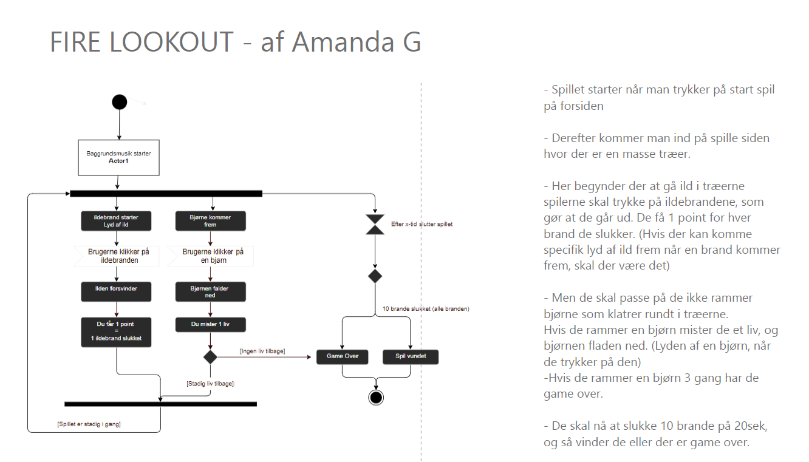

Animation
Tema 4
I dette tema skulle vi lære at bruge Javascript, her skulle vi udarbejde et computerspil ud fra nogen givende kriterier.
Temaopgave
Firelookout
Temaet startet med den kreativ proces, hvor vi lærte at bruge illustrator, Her bruge jeg metoderne fra tema 3, skitsering, moodbards og styletile, for at finde frem til mine endelige baggrundsdesign, UI og spil-elementer.
Jeg lærte at bruge javascript og css, og brutge det til mine animationer, for de kunne bevæge sig og forsvinde med eventlisenter. Nu var min opgave at sætte det hele sammen, så spillet ville fungere med tid, point og liv.
